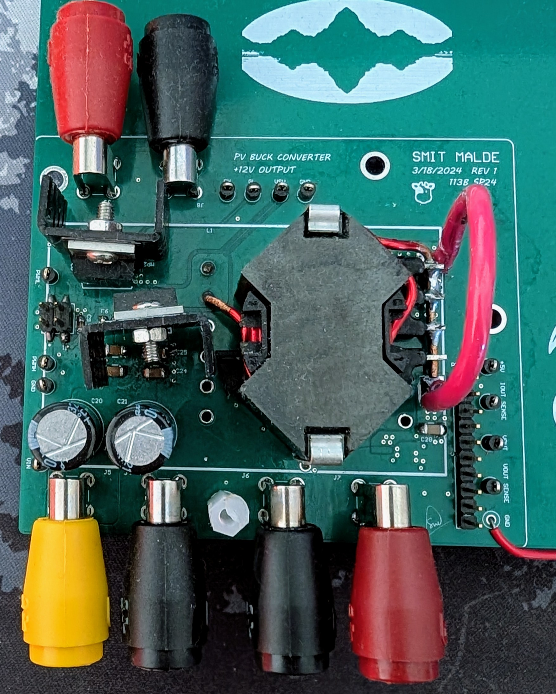
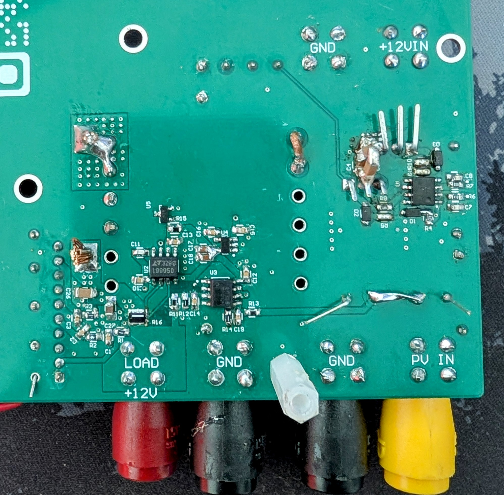
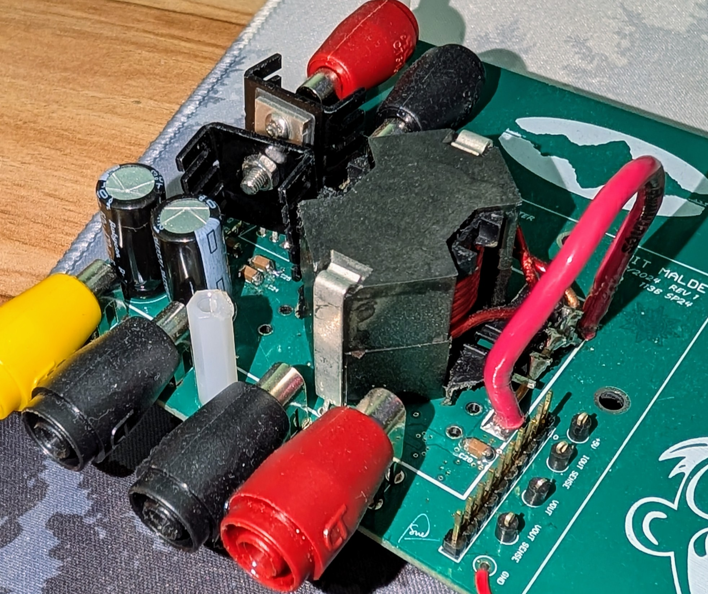
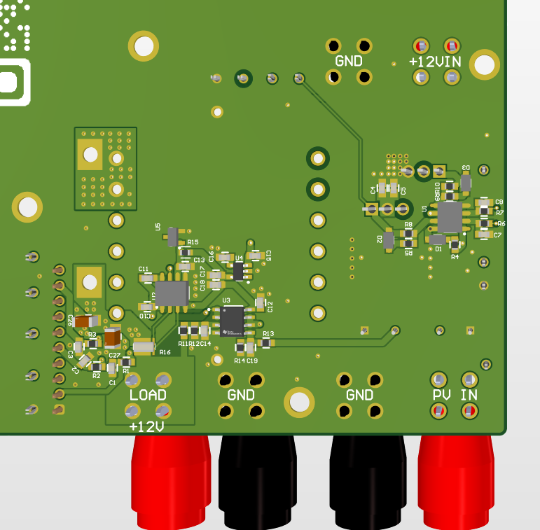
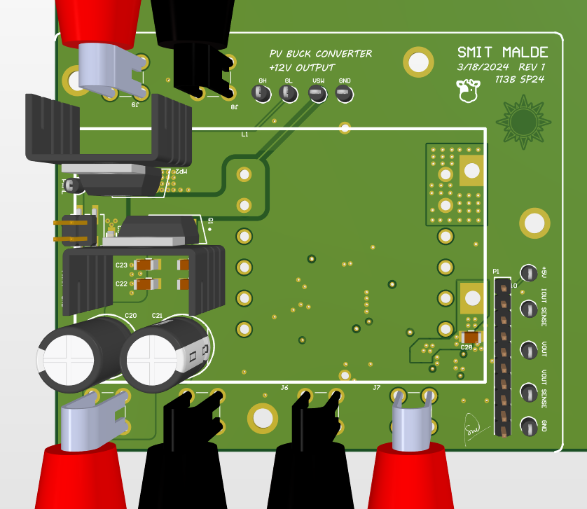

PV-12V 100W Buck Convertor Overview
Designed, simulated and iterated on a PV Panel input to 12V output Buck convertor and wrote a MPPT Algorithm and achieved effieciencies over 97% on all operating points.
The PV-12V 100W Buck Converter project involves designing a buck converter that steps down the voltage from a photovoltaic (PV) panel to a stable 12V output. The project includes the development of a Maximum Power Point Tracking (MPPT) algorithm to optimize the efficiency of the power conversion process.
Design Manual Highlights
The design manual provides a comprehensive guide to the design process, including:
- Component selection and sizing
- Simulation results and analysis
- Thermal management considerations
- PCB layout guidelines
Schematics Overview
The schematics document details the circuit design, including:
- PV panel input section
- Buck converter topology
- Control circuitry for MPPT
- Output filtering and regulation
Design Images




